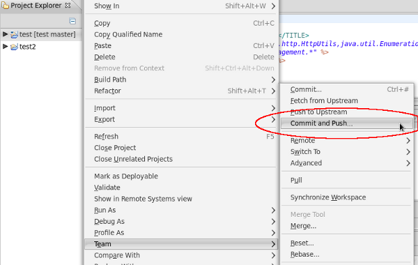

Server |
|
|
Remote AS7 Servers |
The AS7 server adapter is now capable of dealing with remote JBoss AS 7 server. You can now deploy to them and start/stop them as you already can with prior JBoss servers. |
|
EAP 6 Support |
We added support for JBoss EAP 6 in JBoss Tools M3. |
|
AS7 Adapter Workflow |
JBoss AS 7 finally matches all features that we offered when configuring adapters for prior JBoss AS adapters. You can now add new runtimes at will, edit them, configure their deployment behaviour when creating them etc. |
|
Detecting running server |
When you start a server adapter, we'll check if there's a server already running. We'll then let you choose to use the server we found or to start a new instance. |
Miscellaneous |
|
|
1 Step Commit and Push to Git |
When working with git repositories you'd sometimes want to commit and push at once. The current Eclipse tooling requires you to first call commit and then execute push in a 2nd step. We therefore added an entry to the context menu of git shared projects that would allow you to commit and push in 1 step. The workflow is not yet perfect in the sense that it would still present you the dialog to push even if you cancelled the commit. We fixed that in the patch we contributed to Eclipse Egit
|